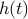
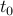
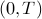
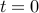
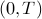
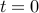

Bounds on maximum throughput for digital communications with finite-precision and amplitude constraints
IEEE Transactions on Information Theory, 36(3):472-484, May 1990.
The problem of finding the maximum achievable data rate over a linear
time-invariant channel is considered under constraints different from those
typically assumed. The limiting factor is taken to be the accuracy with which
the receiver can measure the channel output. More precisely, the following
problem is considered. Given a channel with known impulse response , a
transmitter with an output amplitude constraint, and a receiver that can
distinguish between two signals only if they are separated in amplitude at some
time  by at least some small positive constant  , what is the
maximum number
of messages, ,
that can be transmitted in a given time interval ?
Lower bounds on
can be easily computed by constructing a particular set of
inputs to the channel. The main result is an upper bound
on for arbitrary .
The upper bound depends on the spread of , which is the maximum range
of values the channel output may take at some negative time ,
given that the
output takes on a particular value at time .
Numerical results are
shown for different impulse responses, including two simulated telephone
subscriber loop impulse responses.
, what is the
maximum number
of messages, ,
that can be transmitted in a given time interval ?
Lower bounds on
can be easily computed by constructing a particular set of
inputs to the channel. The main result is an upper bound
on for arbitrary .
The upper bound depends on the spread of , which is the maximum range
of values the channel output may take at some negative time ,
given that the
output takes on a particular value at time .
Numerical results are
shown for different impulse responses, including two simulated telephone
subscriber loop impulse responses.